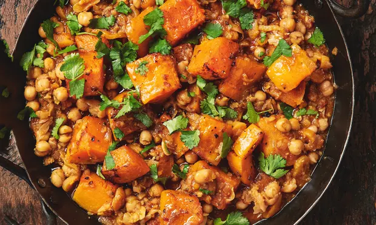

This is an ottolenghi one, found here originally
Preheat oven to 220c
Cook the onions and aromatics down a bit in a big saucepan, then add the stock and cubed squash and let it simmer covered until its mostly cooked.
Transfer the squash cubes to a bowl without any liquid, coat them in oil and salt and pepper and then roast them in the oven, for aobut 20 mins or until nice.
Meanwhile dump the chickpeas back into the liquid and cook for another 10-20 minutes. Let the sauce thicken a little bit and you can smash up some of the chickpeas to help.
Once both parts are cooked to your liking put them together and dress with yogurt and cilantro.